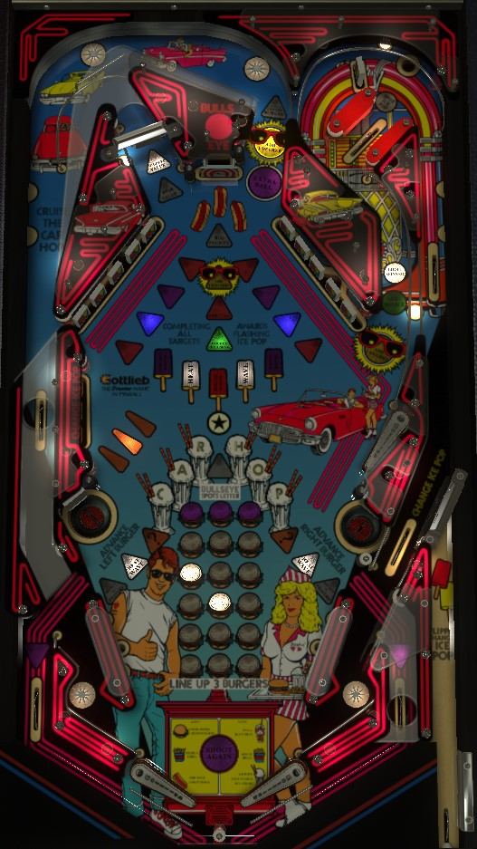

This game can be played in Past or Present mode. Rules and scoring below are for Present mode. Past mode uses a different sound package with bells and chimes and divides all scoring by 1,000 compared to Present mode.
The biggest scoring on Car Hop comes from the spinner 3-way combo: shoot the Loop via the lane just right of the center Bullseye target, which feeds the left flipper, then shoot the right lane to hit the top right drop target, then use the upper flipper as the ball comes back down to shoot the spinner in the upper left. If you do all three without missing, the spinner scores 100,000 points per spin, and if you make the combo two consecutive times, the spinner scores 200,000 per spin instead. All other scoring modes should be timed out by comparison.
The skill shot is a precise-power plunge that triggers the rollover lane which cuts across the u-turn in the upper left of the playfield. Doing so instantly starts the currently selected Icepop mode, which can be rotated with the right flipper while the ball is in the shooter lane.
A very short plunge will come down the right in lane to the right flipper, which is not advised. A successful skill shot, or a plunge that was too strong to make the skill shot, goes all the way around the u-turn and makes its way to the upper right flipper. If you shoot the ball directly at the spinner in the upper left without hitting any other switches along the way, the spinner scores 100,000 points per spin, which can be worth over 2,000,000 points just for starting the ball.
To start an Icepop mode, clear both 5-banks of drop targets. When no mode is running, the two target banks are tied together, meaning hitting a drop target in one bank causes the same drop target in the other bank to automatically fall down. The flashing icepop represents the currently selected mode, which can be rotated by the right flipper on the plunge, the left standup targets, or by the switch above the right in lane.
The Heat and Wave modes do nothing on their own, but starting both of them causes both lower saucers to be lit for Heat Wave, which is the closest think Car Hop has to a wizard mode. In Heat Wave, you have 20 long seconds (about 40-45 real seconds) to collect 15 degree advances. Degree advances are indicated by the suns on the playfield: the Loop (just right of the center bullseye) and the u-turn shot on the right award 1 degree advance, while the center bullseye target awards 2. Collecting 15 advances in the time limit completes the mode. The completion bonus for Heat Wave is displayed before the mode starts: if your score when starting Heat Wave is between 3,000,000 and 50,000,000 points, the completion bonus is Double Your Score, otherwise the completion bonus is 3,000,000 points.
At the end of the ball, your end of ball bonus is equal to 100,000 points per mode in the currently completed set, plus 10,000 points per drop target that was knocked down toward collecting the next Icepop. Collecting all 5 icepops scores an instant 1,000,000 points and resets all the icepops so the modes can be played again, which removes your built-up bonus. Since this game has no bonus multiplier, the 1,000,000 completion bonus is better than the possible 500,000 points in end of ball bonus.
The loop shot consists of using either lower flipper to shoot the lane just right of the bullseye target, which returns to the left in lane via the left side of the playfield. Making this loop repeatedly without hitting any other switches in between scores an increasing value: 50,000, then 100,000, then a repeatable 250,000 until you miss. Making the loop also raises the single drop target in the u-turn in the upper right. If you shoot the u-turn immediately after making the loop, knocking down the lone drop target will light the spinner in the upper left for 100,000 points per spin, but only until a non-spinner switch is hit. If you make this 3-way combo twice in a row without interruption, the spinner will be lit for 200,000 points per spin the second time. This is ludicrous value, and is the only thing that should be practiced or aimed for on Car Hop.
When the spinner is not lit and no mode is running, it scores 10,000 points per spin. If any mode is running, the spinner scores 1,000 points per spin and the loop combo is not available for lighting it.
If you make the loop shot but the ball drains down the left out lane due to the crossover geometry of the bottom left of the table, you get the ball back for free as a drain shield. The left out lane lights purple briefly to indicate this.
The left saucer moves the left burger up one step, and the right saucer does the same for the right burger, as shown on the playfield. The center burger is moved by making the Loop shot or any slingshot. Whenever all three burgers are on the same white row, the center bullseye target scores 1,000,000 points. If all three burgers are on the top purple row, the Loop shot is lit for extra ball.
At the start of the ball, both lower saucers are lit for Select a Feature. Hitting a slingshot alternates whether the saucers are lit for Select a Feature or Mystery. Collecting either Select a Feature or Mystery unlights that saucer, and you will not be able to collect Select a Feature or Mystery from that saucer for the rest of the ball.
In Select a Feature, the alphanumeric display shows you an award; for 5 seconds, you can press the right flipper to reroll for a new award, or press the left flipper to collect. If time runs out, the currently displayed award is auto-collected. In Mystery, the game just picks an award for you instead from the same pool. Below are awards I've seen in Select a Feature or Mystery: the list is likely not exhuastive.
The jackpot starts at 1,000,000 points and increases by 100,000 each time a new ball is played. The jackpot rolls over from player to player and game to game, with a maximum of at least 9,000,000 points. Each slingshot hit changes which letter in CAR*HOP (including the star) is selected. If the selected letter has not already been lit (see the lower left of the backglass), it can be collected at the bullseye target. Complete CAR*HOP to score and reset the jackpot.
Car Hop has an almost-conventional in/out lane setup, with in lanes that slant slightly toward the edges of the table. The star rollovers that form in lane switches score 1,000 points. Out lanes score 100,000 points. Making the Loop shot, or making the u-turn shot when the solo drop target is not raised, lights the left and right out lanes respectively for a brief drain shield, saving the ball and allowing you to shoot again if the ball chokes up at the in/out lane crossover and falls into the out lane.
Bonus is counted as 100,000 points for each lit Icepop on the current trip through the game's modes, plus 10,000 points for each 5-bank drop target that was knocked down on route to starting the next mode. There is no bonus multiplier or mid-ball bonus collect. Completing all 5 modes and collecting the 1,000,000 bonus resets the completed mode progress, which accordingly resets the end of ball bonus.
In competition/novelty play, extra balls and specials score 1,000,000 points.
| If you need... | Try... |
| 20,000 points | ...shooting any 5-bank drop target. |
| 100,000 points | ...shooting for the unlit spinner when no mode is running to earn the 10,000 points per spin. |
| 250,000 points | ...shooting the Loop repeatedly a couple times, or starting Points Round icepop mode and completing one set. |
| 1,000,000 points | ...collecting an extra ball or special from icepop modes or the purple burger line-up feature. |
| 5,000,000 points | ...making a few spinner 3-way combos, taking shots at a spinner worth 100,000 or 200,000 points per spin. |
| 20,000,000 points or more | ...making a whole lot of spinner combos, playing the Points Round icepop mode for a while with the goal of collecting the 8,000,000 at the end at least once, or trying Heat Wave to double your score if that would be helpful. |
Some rules and scoring values were verified by Richie Terry.